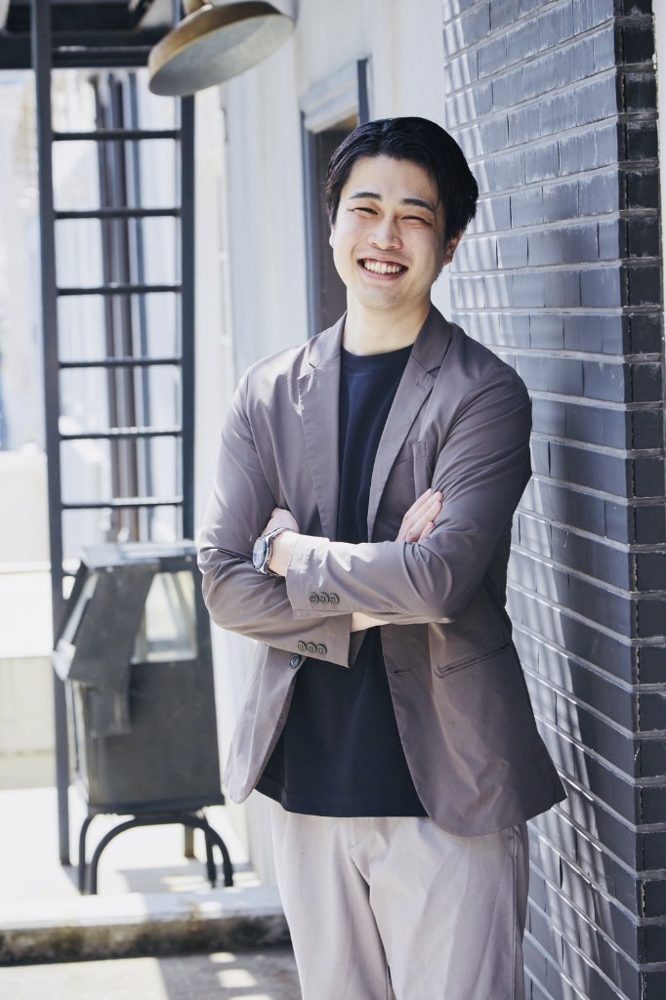

専門的知識・経験を持つ
キャリアカウンセラー
キャリア相談に10年以上対応しています。

キャリアカウンセラー
佐治逸郎
1986年生まれ。2012年、第二新卒で（株）リクルートエージェントに入社。法人の採用支援、個人の転職支援、事業企画、マネジメントを歴任。キャリア相談＆支援実績1000名以上。2020年12月、（株）キャリアパートナーを副業にて創業し、転職を前提としないキャリアの内省支援事業をスタート。受容性の高さと7年のマネジメント経験で培った内省支援力が強み。2025年6月末にリクルートを退職し、（株）キャリアパートナーにて内省支援事業、RPO事業を運営。プライベートは2児（9歳、4歳）の父親。

キャリアカウンセラー
中村果代
東京理科大学卒業後、リクルートに新卒入社。法人営業として採用・事業成長を支援し、キャリアアドバイザーとしてもエンジニアや管理部門の転職を支援してきた。2012年よりマネージャーとして育成・研修・サービス改善を推進。産休育休から復職にかけてMBAを取得し、2021年より部長として100名超を統括。国家資格キャリアコンサルタント。テクノロジーを手段に人が自分らしい未来を描けるよう伴走する挑戦を続けている。

キャリアカウンセラー
渡辺裕馬
人材・組織開発領域を軸にキャリアを重ね、リクルートでは新卒採用支援における法人営業、新卒・第二新卒領域のキャリア支援を経験。現在は採用戦略・RPO領域において、中途採用やハイクラス採用を支援している。国家資格キャリアコンサルタント。企業・個人双方の支援経験を活かし、「人はどのように意思決定をするのか」をテーマに、内省やキャリア形成について研究・発信を続けている。

キャリアカウンセラー
只松麗子
1990年生まれ。千葉大学大学院で教育心理学を学んだ後、私立中高一貫校にスクールカウンセラーとして勤務。帰国後は株式会社リクルートにてキャリアアドバイザー業務に従事。若年層の顧客と関わる中で、10代の学びの機会や他者との関わりの重要性を改めて実感し、2023年より教育系NPO法人に参画。趣味はパン作り。

キャリアカウンセラー
有松健太
1984年生まれ。法人経営者。日系大手上場企業の事業戦略推進室室長を歴任。副業で10種類以上のコーチング資格を取得後、法人経営者から個人事業主、フリーランスの起業支援を実施。個人の強みにフォーカスした共感力・理解力の高さやマネジメント経験で培ったエンパワーメントが強み。プライベートは2児（10歳、7歳）の父親。

キャリアカウンセラー
久保今日子
公務員として7年勤務後、大手人材業界でキャリアアドバイザーとして6年間従事。コーチングと内省支援の実践を通じて社内表彰・MVPなど多数の受賞歴。現在は「内省支援」に特化すべく、CTIコーチングを学びながら、国際コーチング資格の取得に向けて学びを深めています。